Créditos y material con licencia libre
Habinson usa algunos materiales de terceros con licencias Creative Commons Atribución-CompartirIgual. En esta página se publican, sin restricciones técnicas, las versiones adaptadas que van dentro de la app, con su autoría, su origen, su licencia y los cambios hechos. Cualquiera puede copiarlas, modificarlas y redistribuirlas en las condiciones de esa licencia.
El resto de la app (código, textos y preguntas propias, dibujos) no está incluido en estas licencias. Las licencias de los paquetes de software, las tipografías y los iconos se pueden consultar dentro de la app, en Créditos > Licencias de paquetes.
Baraja española
- Obras originales: «Baraja española completa.png», de Basquetteur (2014), obra derivada de «Baraja española.svg», de Germarquezm. El reverso procede de «Reverso baraja española.svg», de Germarquezm (2013). Fuente: Wikimedia Commons.
- Licencia de las originales y de estas versiones: Creative Commons Atribución-CompartirIgual 3.0 (CC BY-SA 3.0).
- Cambios: la baraja se ha recortado en cartas sueltas y se han reescalado (salvo las cartas de obra propia, ver más abajo); el reverso se ha convertido a PNG al mismo tamaño que las cartas.
- Elementos de terceros dentro de la baraja (según la página de «Baraja española.svg»):
- «Coat of arms of Colombia (Regular use).svg», de Milenioscuro, CC BY-SA (4.0, 3.0, 2.5, 2.0 y 1.0).
- «Héraldique meuble Penne.svg», de Ssire, GFDL 1.2+ o CC BY-SA (3.0, 2.5, 2.0, 1.0), a elegir.
- «Lys thick.svg», de Mercury13, dominio público.
- «Escudo de Pol.svg», de SanchoPanzaXXI, GFDL 1.2+ o CC BY-SA (4.0 a 1.0), a elegir.
- «Heraldique Meuble Epee Pointe en bas.svg», de Archimatth, GFDL 1.2+ o CC BY-SA (4.0 a 1.0), a elegir.
- Sin verificar: la página de «Baraja española completa.png» menciona gráficos heráldicos de Wikipedia sin enlazar los archivos, así que no se ha podido comprobar su autoría ni su licencia. Si alguien conoce el origen, esta página se completará.
- Obra propia: las cartas de oros (del as al nueve y la moneda de las figuras 10 y 12) y los cuatro caballos (los 11) son dibujos propios de Habinson, sin material de terceros. Las figuras de sota y rey de oros conservan el dibujo de la baraja de Commons.


.svg){kind=link}


Cartas tal como se usan en la app (pulsa para descargar):

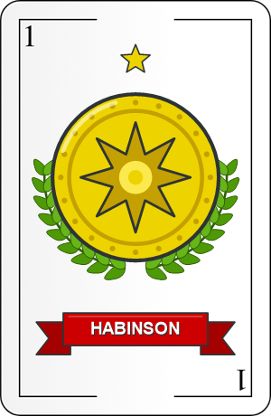
oros_1
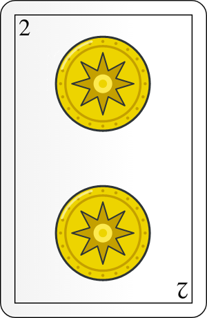
oros_2
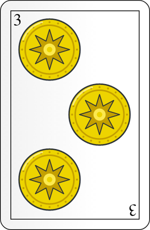
oros_3
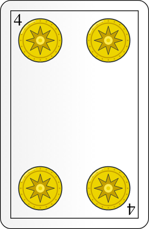
oros_4
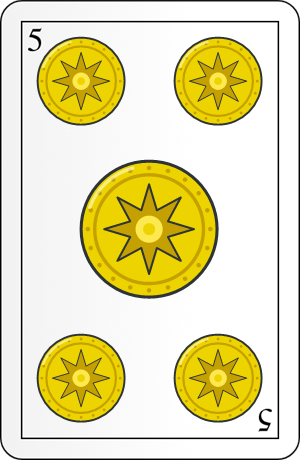
oros_5
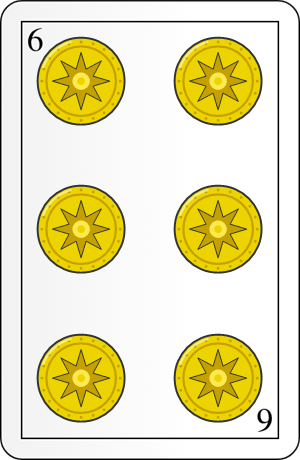
oros_6
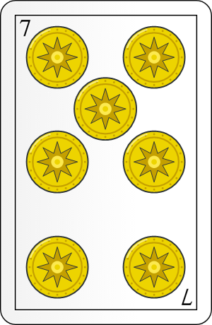
oros_7
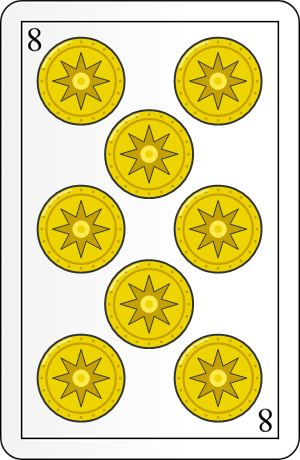
oros_8
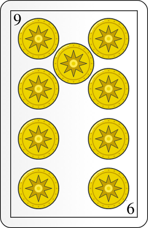
oros_9
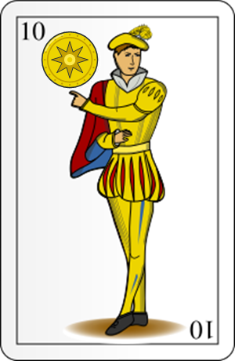
oros_10
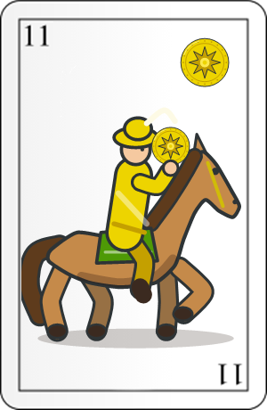
oros_11
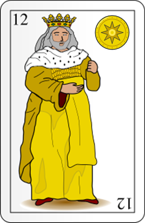
oros_12
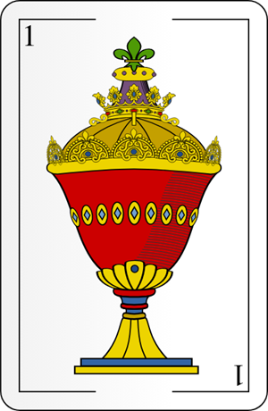
copas_1
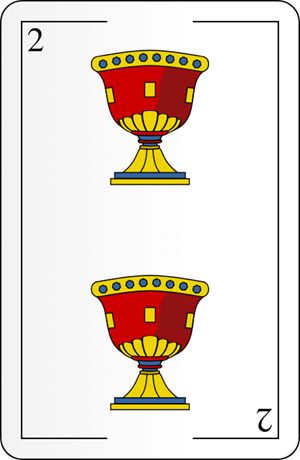
copas_2
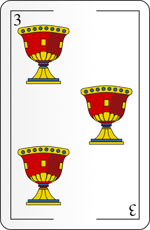
copas_3
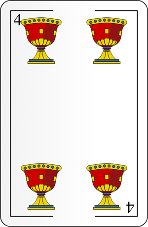
copas_4
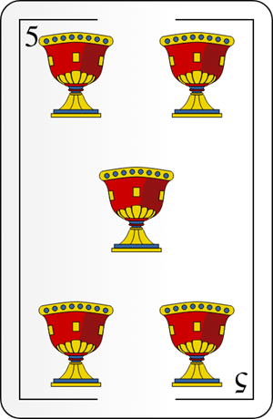
copas_5
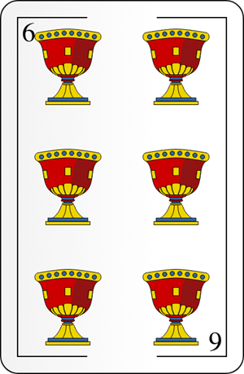
copas_6
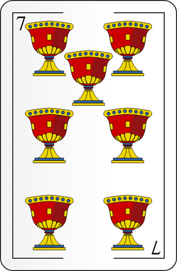
copas_7
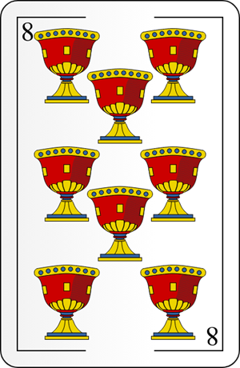
copas_8
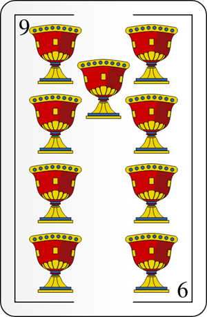
copas_9
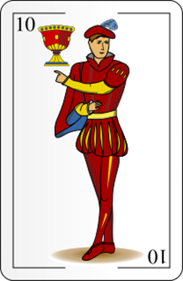
copas_10
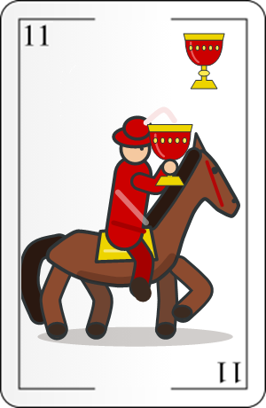
copas_11
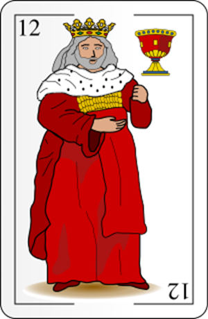
copas_12
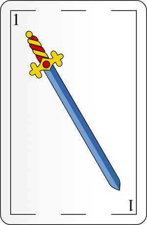
espadas_1
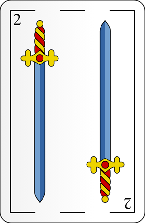
espadas_2
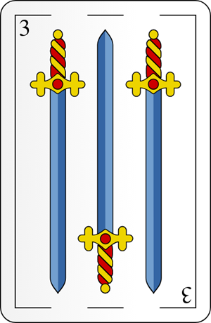
espadas_3
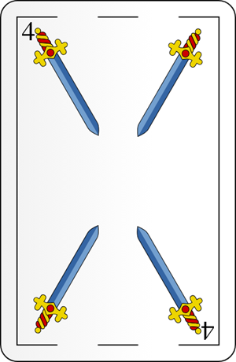
espadas_4
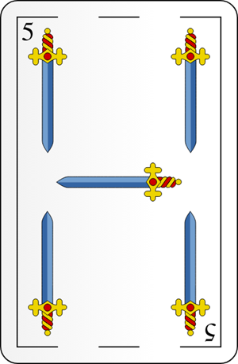
espadas_5
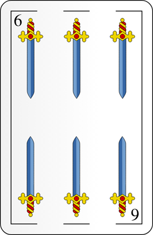
espadas_6
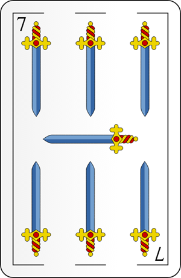
espadas_7
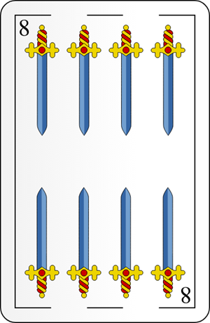
espadas_8
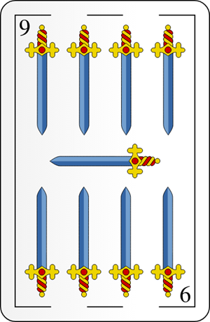
espadas_9
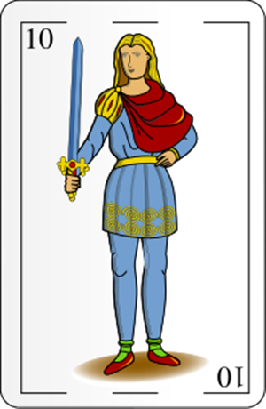
espadas_10
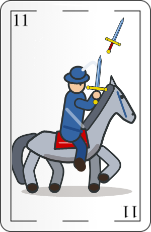
espadas_11
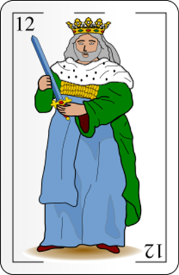
espadas_12
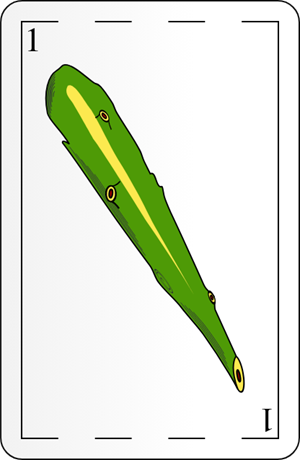
bastos_1
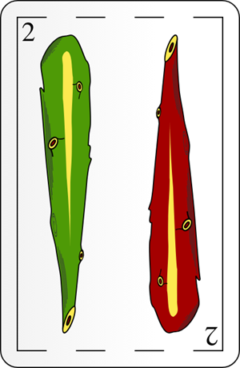
bastos_2
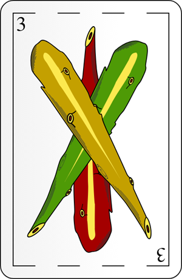
bastos_3
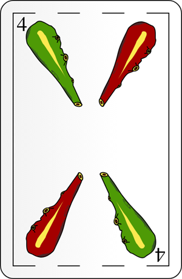
bastos_4
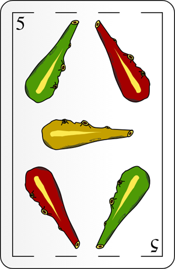
bastos_5
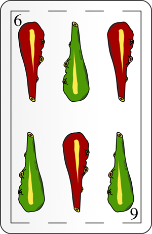
bastos_6
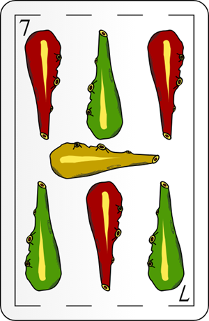
bastos_7
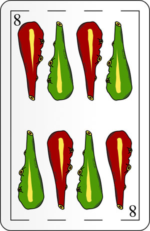
bastos_8
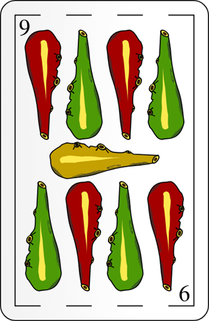
bastos_9
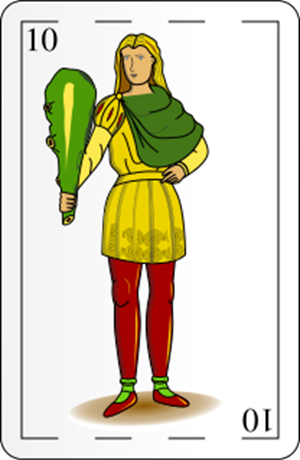
bastos_10
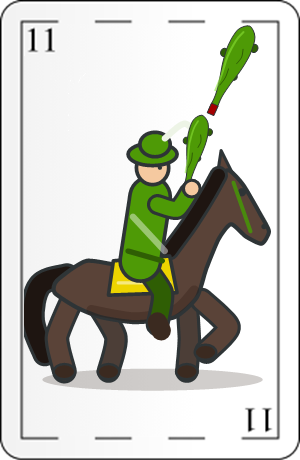
bastos_11
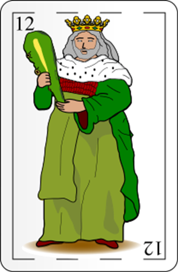
bastos_12
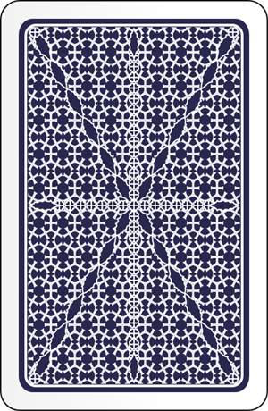
reversoPreguntas de Trivia de Open Trivia DB
- Obra original: preguntas de Open Trivia Database (opentdb.com), aportadas por su comunidad.
- Licencia de las originales y de estas versiones: Creative Commons Atribución-CompartirIgual 4.0 Internacional (CC BY-SA 4.0).
- Cambios: traducidas al español y adaptadas.
- Alcance: solo estas 48 preguntas (identificador
ot-en la app). El resto de preguntas de Trivia son originales de Habinson y no están bajo esta licencia. - Sin verificar: Open Trivia DB no muestra el autor de cada pregunta, así que la atribución se hace al proyecto.
| Id | Pregunta | Respuesta | Respuestas incorrectas |
|---|---|---|---|
| ot-his01 | ¿Qué antiguo reino ibérico, además de Castilla, León y Aragón, aparece en el escudo del rey de España? | Navarra | Galicia · Granada · Cataluña |
| ot-his02 | ¿Qué emperador bizantino mandó construir Santa Sofía? | Justiniano I | Constantino IV · Arcadio · Teodosio el Grande |
| ot-his03 | ¿Quién fue el último emperador de México? | Maximiliano de Habsburgo | Agustín de Iturbide · Napoleón III · Benito Juárez |
| ot-his04 | ¿En qué año se adoptó por primera vez el calendario gregoriano? | 1582 | 1623 · 1501 · 1555 |
| ot-his05 | ¿En qué país se cultivaron originalmente las patatas? | Perú | Irlanda · Estados Unidos · Nueva Zelanda |
| ot-his06 | ¿Qué día de enero de 1933 fue nombrado Hitler canciller de Alemania? | 30 | 12 · 7 · 25 |
| ot-his07 | ¿Quién asesinó al presidente estadounidense James A. Garfield? | Charles Guiteau | Leon Czolgosz · John Wilkes Booth · Sirhan Sirhan |
| ot-cie01 | ¿Cuál es la unidad del SI para la intensidad luminosa? | Candela | Lumen · Faradio · Culombio |
| ot-cie02 | ¿Cuál es la unidad de inductancia eléctrica? | Henrio | Weber · Culombio · Mho |
| ot-cie03 | ¿Cómo se llama la envoltura gaseosa de un cometa que origina su cola? | Coma | Estela · Corona · Halo |
| ot-cie04 | ¿Qué es un «gosipiboma»? | Gasa olvidada dentro del cuerpo tras una cirugía | Tumor benigno del estómago · Fractura por estrés · Cálculo en la vesícula |
| ot-cie05 | ¿Cuál es el nombre científico del «dolor de cabeza por helado»? | Neuralgia del ganglio esfenopalatino | Cefalea de Horton · Neuralgia del trigémino · Migraña trigeminal |
| ot-cie06 | ¿Cuál es la fórmula molecular de la glucosa? | C6H12O6 | C2H4O2 · CH4 · C12H22O11 |
| ot-nat01 | ¿Qué ave nace con garras en los dedos de las alas? | Hoacín | Casuario · Cormorán · Secretario |
| ot-nat02 | ¿Cuántas especies vivas de hiena se conocen? | 4 | 2 · 6 · 8 |
| ot-nat03 | ¿Cuál de estos animales NO es un lagarto? | Tuátara | Dragón de Komodo · Monstruo de Gila · Iguana verde |
| ot-nat04 | ¿Qué es una carabela portuguesa? | Una colonia de pólipos, no una medusa | Una medusa gigante · Un tipo de coral · Un molusco |
| ot-nat05 | La caquexia crónica (enfermedad del ciervo zombi) solo afecta a los… | Cérvidos | Homínidos · Félidos · Cánidos |
| ot-nat06 | ¿Cuál es el nombre científico del lobo gris? | Canis lupus | Canis aureus · Canis latrans · Vulpes lupus |
| ot-art01 | ¿En qué año pintó Dalí «La persistencia de la memoria»? | 1931 | 1929 · 1932 · 1934 |
| ot-art02 | ¿A qué movimiento perteneció Piet Mondrian? | Neoplasticismo | Cubismo · Impresionismo · Precisionismo |
| ot-art03 | ¿A qué lugar se mudó Paul Gauguin en 1895? | Tahití | Francia · Lituania · Madagascar |
| ot-art04 | ¿Cuántas versiones al óleo y pastel de «El grito» se cree que pintó Edvard Munch? | 4 | 1 · 2 · 3 |
| ot-art05 | ¿Quién pintó «Gótico americano»? | Grant Wood | Edward Hopper · Marc Chagall · Norman Rockwell |
| ot-art06 | ¿Quién era la hija del rey Minos en la mitología griega? | Ariadna | Atenea · Ariel · Alana |
| ot-art07 | ¿Qué dios nórdico tiene un caballo llamado Sleipnir? | Odín | Thor · Frigg · Balder |
| ot-art08 | ¿De qué isla era protector Talos, el gigante de bronce? | Creta | Sicilia · Cerdeña · Chipre |
| ot-art09 | ¿A quién venció Hipómenes en una carrera a pie? | Atalanta | Teseo · Jasón · Peleo |
| ot-art10 | ¿De qué mitología proviene la criatura Nidhogg? | Nórdica | Egipcia · Griega · Hindú |
| ot-dep01 | ¿Cuál es el nombre completo de Cristiano Ronaldo? | Cristiano Ronaldo dos Santos Aveiro | Cristiano Armando Diego Ronaldo · Cristiano Luis Armando Ronaldo · Cristiano Ronaldo los Santos Diego |
| ot-dep02 | ¿Cuál es «el deporte de los reyes»? | La hípica | El ajedrez · La esgrima · Las justas |
| ot-dep03 | ¿Qué futbolista le dio una patada de kung-fu a un aficionado del Crystal Palace en 1995? | Eric Cantona | Mark Hughes · Ashley Cole · David Seaman |
| ot-dep04 | ¿En qué carrera se decidió el Mundial de F1 de 2018? | Gran Premio de México | Abu Dabi · Bélgica · Estados Unidos |
| ot-oci01 | ¿Cómo se llama la especie del Depredador en la película «Depredador» (1987)? | Yautja | Xenomorfo · Praetoriano · Phocrex |
| ot-oci02 | ¿Cuál era el segundo nombre de Humphrey Bogart? | DeForest | DeWinter · Steven · Bryce |
| ot-oci03 | ¿Cómo se llama el asesino de la primera película de «Hellboy»? | Karl Ruprecht Kroenen | Klaus Werner von Krupt · Ilsa Haupstein · Grigori Rasputín |
| ot-oci04 | ¿Cuál era la clave del wifi que le dieron a Stephen Strange en «Doctor Strange»? | Shambala | Peace · Chakra · Ancient |
| ot-oci05 | ¿De qué banda de metal alternativo es cantante Chino Moreno? | Deftones | Tool · Korn · Type O Negative |
| ot-oci06 | ¿Cómo se llamaba la banda de rock de Nobuo Uematsu que tocaba temas de Final Fantasy? | The Black Mages | The Espers · The Final Fantasies · The Rock Summoners |
| ot-oci07 | ¿Cuál es el nombre artístico de la cantante neozelandesa Pip Brown? | Ladyhawke | Lorde · Kesha · Anika Moa |
| ot-oci08 | ¿Qué canción de Elton John empieza con «When are you gonna come down»? | Goodbye Yellow Brick Road | Rocket Man · Crocodile Rock · Bennie and the Jets |
| ot-oci09 | ¿Qué canción de los Bee Gees (1978) versionaron Steps veinte años después? | Tragedy | Night Fever · Stayin' Alive · You Should Be Dancing |
| ot-oci10 | ¿Qué boxeador golpeaba el gong en la introducción de las películas de J. Arthur Rank? | Bombardier Billy Wells | Freddie Mills · Terry Spinks · Don Cockell |
| ot-cur01 | ¿Qué significan las siglas TCAS en los sistemas de vuelo? | Sistema de alerta de tráfico y anticolisión | Sistema de control de altitud · Sistema de comunicaciones aéreas · Sistema de aterrizaje automático |
| ot-cur02 | ¿Qué presidente de EE. UU. inauguró oficialmente el canal de Panamá? | Woodrow Wilson | Theodore Roosevelt · Calvin Coolidge · Herbert Hoover |
| ot-cur03 | ¿Qué es la «nefelococigia»? | Buscar formas en las nubes | Dormir con los ojos abiertos · Romper cristales con la voz · Nadar en agua helada |
| ot-cur04 | ¿Qué monarca británico nunca apareció en una moneda de libra esterlina en circulación? | Eduardo VIII | Victoria · Jorge VI · Carlos II |
| ot-cur05 | ¿Quién fundó la Khan Academy? | Sal Khan | Ben Khan · Kitt Khan · Adel Khan |